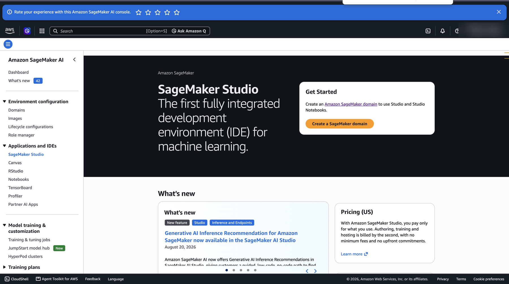
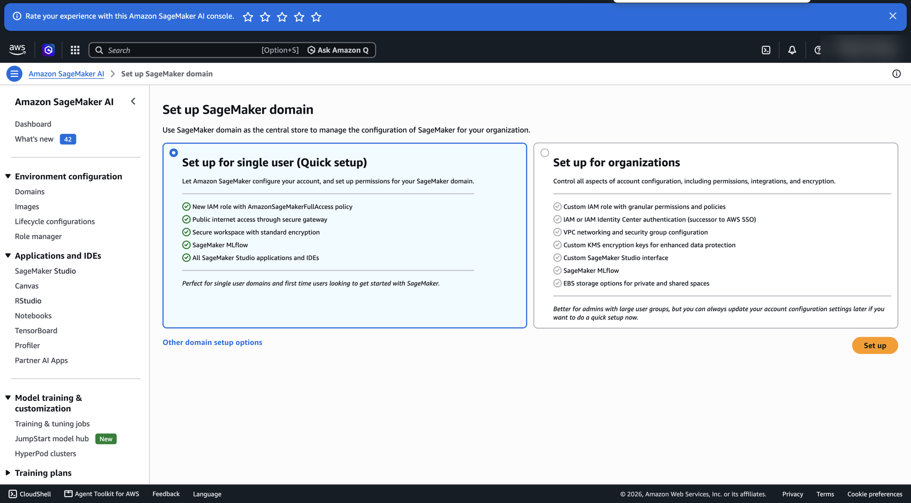
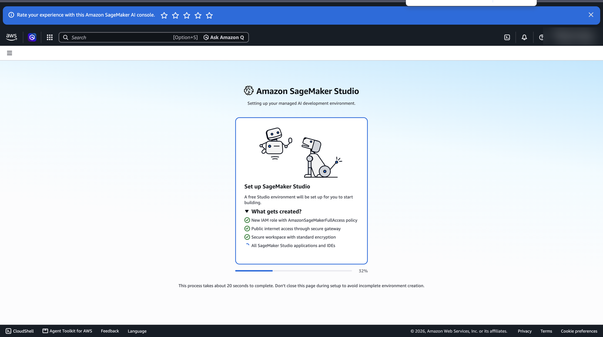
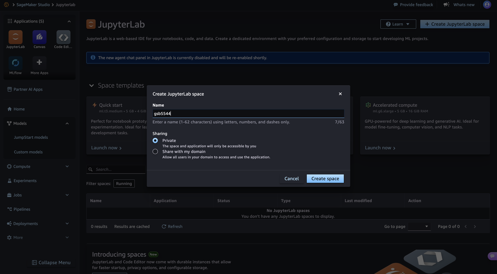
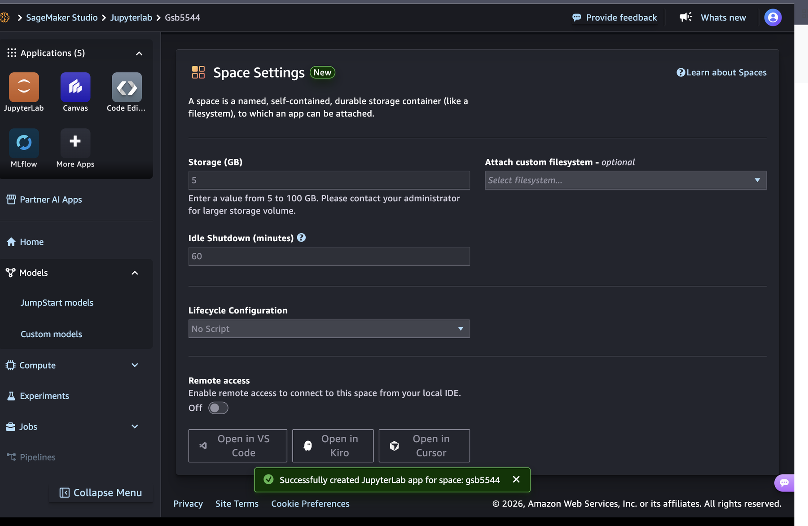
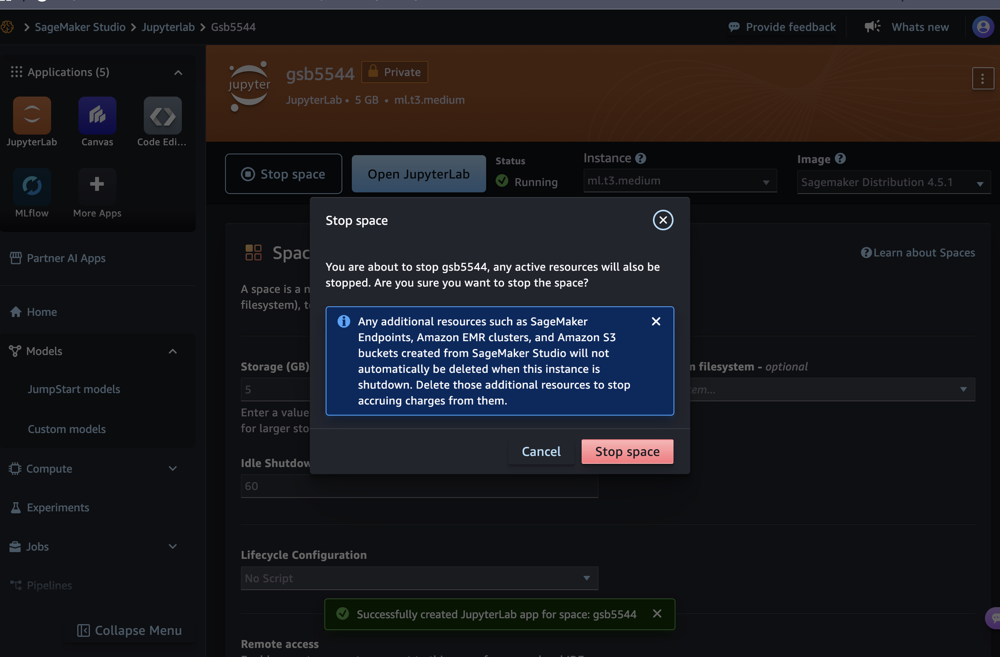

Pre-Class Reading: Data Bigger Than Your Laptop
GSB 5544 · Computing and Machine Learning for Business Analytics
Read before class. Run the few code cells on your laptop as you go, and finish the AWS account setup in section 5. In class you will use the account to do real work on a computer that is not yours.
Why this matters for a business analyst
Every dataset you have used in this course so far arrived as a file you opened. That is not how data arrives in practice. The sales history, the clickstream, the sensor log, the claims table: they live somewhere else, they are usually larger than your machine, and someone has to decide what to bring over before any modeling begins.
There is a second decision hiding behind the first one: where should the code run? Until now the answer was always “on my laptop,” because that was the only computer you had. In the cloud, storage and computing are separate things, and you rent both. The data sits in storage. A computer reaches into that storage, does the work, and hands you something small.
We use weather data as the example. Weather is one of the most common external covariates in business analytics: it drives beverage and apparel demand, energy load, insurance claims, delivery times, and foot traffic. It is also far too large to open casually on a laptop, which is exactly the point. Our example location is close to home: the weather station at Cal Poly in San Luis Obispo (SLO), which has recorded daily weather since 1893.
What you will be able to do
Use your own AWS account to process NOAA weather data on a remote computer, download a compact summary, visualize it locally in Positron, and compare the resources and elapsed time of local and remote execution.
Everything in this module follows one eight-step workflow. You will see this table again in every notebook.
| Step | What you do | Where you are | Which computer runs code | Where the data is |
|---|---|---|---|---|
| 1 | Sign in to your own AWS account | Browser, AWS website | none | S3 (NOAA’s public bucket) |
| 2 | Open and start your SageMaker space | Browser, SageMaker Studio | none yet | S3 |
| 3 | Read NOAA data from S3 | Remote notebook (JupyterLab tab) | SageMaker | S3 → SageMaker’s RAM |
| 4 | Filter, transform, aggregate | Remote notebook | SageMaker | SageMaker’s RAM |
| 5 | Save a small summary CSV | Remote notebook | SageMaker | SageMaker’s disk |
| 6 | Download the summary | Browser, JupyterLab file browser | none (a file copy) | SageMaker’s disk → your laptop’s disk |
| 7 | Open it and make the chart | Local notebook (Positron) | your laptop | laptop’s disk → laptop’s RAM |
| 8 | Save your work and stop the space | Positron, then browser | none | your laptop’s disk; SageMaker’s disk |
Reading NOAA’s files straight into a notebook on your laptop is not this workflow. The point is that a remote computer does the heavy reading and summarizing, and only the small result travels to you.
When you finish the module you should be able to answer five questions about any analysis you run this way:
- Where is the original data stored?
- Which computer performed the analysis?
- What did I download?
- Which computer created the visualization?
- How did the two machines compare?
What this reading covers, and what it leaves for class
| Document | Its job |
|---|---|
| This reading | The concepts, measuring your own laptop, and setting up your AWS account |
| Topics notebook (in class, remote) | Measure the remote machine, look at data sizes, read and summarize a small dataset remotely |
| Practice activity (in class, remote then local) | The full eight-step workflow, plus a fair timing comparison of the two machines |
| Lab (graded, remote then local) | The same workflow on your own, for a two-market inventory-planning question |
Before you start: open a notebook in Positron
This reading has a few code cells, and you run them as you read. All of them go into one new notebook in Positron, on your laptop. Create it now, before section 1.
- If your section set up a course folder (a folder named like
GSB-5544-Fall-2026-ijwwith apractice_activitiesfolder inside it), you already know where things go. Save this notebook underpractice_activities/week_7as usual and skip the folder explanations in steps 1 and 3. - If your section did not, you need one folder to hold this week’s work, and any location you can find again is fine. Create a folder named
GSB-5544on your Desktop or in Documents, and inside it a folder namedweek_7. Steps 1 and 3 refer to this folder.
- Open Positron and open your course folder. Choose File → Open Folder and pick your course folder: the one your section set up, or the
GSB-5544folder you just created. - Create the notebook. Click the New button (the + in the top-left corner), choose New File…, and pick Jupyter Notebook from the list that drops down.

- Save it under week 7. Press Cmd+S (Ctrl+S on Windows) and name the notebook
week_7_preclass_reading.ipynb. Save it in yourweek_7folder. This same folder will later hold the files you download from AWS and the local notebooks for the practice activity and the lab. - Pick Python. If the notebook asks you to select a kernel (top right of the notebook), choose the Python you use for this course.
- Install the packages. Copy this into the first cell and run it with Shift+Enter. The
%pipform installs into the same Python the notebook is using. You only need to do this once.
# RUNS ON: laptop (Positron)
%pip install boto3 pandas pyarrow fsspec s3fs psutil matplotlibIf a later cell stops with ModuleNotFoundError or ImportError, the install did not reach the Python your notebook is using. Run this cell again, restart the kernel (the Restart button at the top of the notebook), and rerun your cells from the top.
How to use the notebook as you go:
- Copy each code snippet from this page into its own cell, in the order it appears, and run it with Shift+Enter. Every code block on this page has a copy button in its top-right corner.
- Run the cells top to bottom. Later cells use names that earlier cells created. If you see a
NameError, a cell above was skipped. - Read the “What this code does” notes after you run each cell, and compare them with the output you got.
Two places you will work, and how to tell which one you are in
This reading moves between two places. Coloured boxes mark every switch.
| The box says | Where you are | What you do there | Why |
|---|---|---|---|
| In your notebook | Positron, on your laptop | Copy a snippet into a cell and run it | The code runs on your own machine, so the numbers describe your laptop. Nothing here costs money |
| Detour: AWS website | Your web browser, signed in to AWS | Click through setup pages. No code | The account and the rented computer can only be created on AWS’s own site |
| Reading only | This page | Read. Nothing to run or click | The section explains ideas you need for what comes next |
What a # RUNS ON: comment does, and does not do
Every code cell in this module begins with a comment naming the computer it is meant for:
# RUNS ON: laptop (Positron)
# RUNS ON: SageMaker (remote)(This block only shows the two labels; it is not a cell to copy.)
The comment is a label for you. It does not move the code anywhere. A cell runs on whichever computer its notebook’s kernel is on. If you open a notebook in Positron, every cell in it runs on your laptop, whatever its first line says. If you open the same file in JupyterLab inside SageMaker, every cell runs on the remote machine.
So the label tells you the plan, and where you opened the notebook decides what really happens. To remove any doubt, each class notebook begins by calling a small function, where_am_i(), that checks the machine it is actually on and prints the computer’s name.
One thing to watch for in class: JupyterLab inside SageMaker looks almost identical to a notebook on your laptop, but it lives in a browser tab and runs on the rented machine. The look of the notebook does not tell you where the code runs. The place it was opened from does.
1. What a computer has: storage, memory, and processors
You are measuring your own machine, so this code has to run on it.
Four ideas, each a pair that people mix up.
Storage versus computation. Storing data means keeping bytes somewhere so they are still there tomorrow. Computing means a processor doing work on bytes it has loaded. A hard drive stores; it cannot add two numbers. A processor computes; it remembers nothing when the power goes off. Your laptop happens to do both in one box. In the cloud they are separate services with separate prices.
Disk versus RAM. Disk (storage) keeps files when the machine is off, and there is a lot of it. RAM (memory) is the working space of a running program, it is much smaller, and it is wiped when the machine stops. pandas works in RAM. A file can fit easily on a disk and still be too big to load.
Total RAM versus available RAM. Total is what is installed. Available is what a new program could use right now, after your browser, chat apps, and everything else have taken their share. A 16 GB laptop often has 4 to 6 GB available. Available is the number that decides whether a dataset loads.
Physical cores, logical CPUs, and vCPUs. A physical core is a real processing unit on the chip. Many chips let each physical core present itself as two logical CPUs (hyper-threading), which helps some workloads and not others. A cloud vCPU is one logical CPU, so a machine sold as “2 vCPUs” may be one physical core. More cores help only when the software uses them; much of pandas works on one core at a time.
Measure your laptop:
# RUNS ON: laptop (Positron)
import socket
import psutil
vm = psutil.virtual_memory()
du = psutil.disk_usage(".") # the disk that holds this notebook
print("Computer name :", socket.gethostname())
print("Physical CPU cores :", psutil.cpu_count(logical=False))
print("Logical CPUs :", psutil.cpu_count(logical=True))
print(f"Total RAM : {vm.total / 1e9:.1f} GB")
print(f"Available RAM right now : {vm.available / 1e9:.1f} GB")
print(f"Work disk, total : {du.total / 1e9:.1f} GB")
print(f"Work disk, free : {du.free / 1e9:.1f} GB")What this code does.
psutilasks the operating system about the machine this cell is running on. Run it in Positron and it describes your laptop. The same lines in a SageMaker notebook describe the rented machine.psutil.disk_usage(".")measures the disk that holds the current folder, the one your work is saved on.logical=Falsecounts physical cores;logical=Truecounts logical CPUs. On some machines they are equal.
Write all the numbers down. In class you will take the same measurements on the remote machine and put the two columns side by side.
| Laptop (now) | SageMaker (in class) | |
|---|---|---|
| Physical CPU cores | ||
| Logical CPUs (vCPUs in the cloud) | ||
| Total RAM (GB) | ||
| Available RAM right now (GB) | ||
| Work disk, total (GB) | ||
| Work disk, free (GB) |
Do not assume the rented machine will be bigger or faster. The one this module uses is small on purpose. What it offers is that it sits next to the data and that you can change its size.
2. Units, and four different sizes of the same data
You need to be fluent in these. Every size in a cloud console, a bill, or an error message uses them.
| Unit | Bytes (decimal) | Something that size |
|---|---|---|
| byte (B) | 1 | One character |
| kilobyte (KB) | 1,000 | A paragraph |
| megabyte (MB) | 1,000,000 | A phone photo |
| gigabyte (GB) | 1,000,000,000 | A year of daily weather readings worldwide, as text |
| terabyte (TB) | 1,000,000,000,000 | A large retailer’s transaction history |
Decimal versus binary. Two conventions coexist. Storage vendors and cloud consoles mostly count in thousands (1 KB = 1,000 B). Operating systems and memory often count in 1,024s (1 KiB = 1,024 B, 1 GiB = 1,073,741,824 B) while still writing “GB”. This is why a “1 TB” drive shows as about 931 GB in your file browser. Neither is wrong; you need to know which one you are reading.
A helper you will be given in every class notebook:
# RUNS ON: laptop (Positron)
def human(n, base=1000):
"""Turn a byte count into a readable string."""
units = ["B", "KB", "MB", "GB", "TB", "PB"] if base == 1000 else ["B", "KiB", "MiB", "GiB", "TiB", "PiB"]
for unit in units:
if n < base:
return f"{n:,.1f} {unit}"
n /= base
return f"{n:,.1f} (huge)"
print(human(1_500_000)) # 1.5 MB
print(human(1_000_000_000_000, 1024)) # 931.3 GiB: the "1 TB" driveFour sizes you will meet in class
The same data has a different size at each stage of the workflow. Keeping them apart answers most “will it fit?” questions.
| Size | Where it is | What decides it |
|---|---|---|
| Source-file size | In S3 | How the files are stored. Compressed formats such as Parquet are small on disk |
| DataFrame memory | In the RAM of the computer that loaded it | How pandas holds each column. Text columns are expensive. Often several times the source size, sometimes much more |
| Remote disk space | On the SageMaker space’s own small disk | What you choose to save there: notebooks and summary files. It is not S3 |
| Downloaded-summary size | On your laptop’s disk | How much you reduced the data before exporting it |
There is no multiplier that reliably turns a file size into a memory size. A compressed Parquet file can grow tenfold or more when loaded; a CSV of numbers can shrink. The honest method is to start with a piece you know is small, load it, and measure with df.memory_usage(deep=True).sum(). You will do exactly that in class and record all four sizes.
3. The vocabulary of AWS
Sections 3 and 4 use these words without stopping to explain them.
Amazon Web Services (AWS) is the largest cloud provider. These terms cover what you need.
| Term | What it is | The confusion it prevents |
|---|---|---|
| Region | A geographic cluster of data centers, such as us-east-1 (N. Virginia) |
Why something “doesn’t exist”: you are looking in the wrong region |
| S3 | Simple Storage Service. Storage only | Why S3 can hold your data but cannot analyze it |
| Bucket | A named container for objects. Names are unique across all of AWS | Why the weather data has one fixed address: noaa-ghcn-pds |
| Object | One stored file plus its metadata, such as size and date | Why you can learn an object’s size without downloading it |
| Key | The object’s full name inside its bucket, such as csv/by_year/2024.csv |
Why that is one name, not three folders and a file |
| Prefix | The beginning of a key, used to list everything “under” it | How S3 imitates folders |
| Instance | A rented computer with a fixed number of vCPUs and amount of RAM, billed while it runs | What “compute” means, as distinct from storage |
| Instance type | The size of that computer. ml.t3.medium is 2 vCPUs and 4 GB of RAM |
Why “run it in the cloud” is not one thing: you choose how much machine |
| SageMaker Studio | The AWS service that gives you a rented computer with JupyterLab on it | Where your remote notebook lives |
| Space | SageMaker’s name for one JupyterLab environment plus its small disk. A space runs on an instance | What the Run space and Stop space buttons act on |
| IAM and credentials | Who is allowed to do what, and the keys that prove who you are | Why your own resources need you to be signed in |
The idea underneath all of them: storage and computing are separate, and both are rented. Data sits in S3. A computer reaches into S3 for it. The data does not move unless some computer reads it; you decide which computer.
AWS has many more services. One of them, Athena, runs SQL directly over files in S3 and is covered in an optional extension. Nothing required in this module uses it.
4. Public data, your own computer
NOAA, the U.S. National Oceanic and Atmospheric Administration, publishes the Global Historical Climatology Network – Daily (GHCN-Daily): daily observations from tens of thousands of weather stations worldwide, some going back to the 1700s. A copy lives in the S3 bucket noaa-ghcn-pds, listed in the Registry of Open Data on AWS.
That bucket is public. Anyone can read it anonymously: no account, no sign-in, no credentials. In code, an anonymous request is called unsigned.
So why do you need your own AWS account? Because of the other half of the picture:
| Whose is it? | Do you need to sign in? | Who pays? | |
|---|---|---|---|
| The data (NOAA’s bucket) | NOAA’s, hosted under AWS’s open-data program | No. Reads are anonymous | Not you |
| The computer that reads and summarizes it (your SageMaker space) | Yours | Yes. It exists only inside your account | You, from your account’s credits |
Your account is not a key to the data. It is what lets you rent the computer.
One short cell, to see anonymous access and the bucket/key vocabulary for yourself. It asks S3 for names and sizes only. No weather data is downloaded.
# RUNS ON: laptop (Positron)
import boto3
from botocore import UNSIGNED
from botocore.config import Config
BUCKET = "noaa-ghcn-pds"
s3 = boto3.client("s3", region_name="us-east-1", config=Config(signature_version=UNSIGNED))
resp = s3.list_objects_v2(Bucket=BUCKET, Delimiter="/")
print("Top-level prefixes:", [p["Prefix"] for p in resp.get("CommonPrefixes", [])])
key = "csv/by_year/2024.csv"
meta = s3.head_object(Bucket=BUCKET, Key=key)
print("Bucket:", BUCKET)
print("Key :", key)
print("Size :", human(meta["ContentLength"]))What this code does.
boto3is the official AWS library for Python.boto3.client("s3", ...)builds an object whose methods are the things you can ask S3 to do.Config(signature_version=UNSIGNED)tells it to attach no credentials. That one argument is what “anonymous access” means in code.list_objects_v2(..., Delimiter="/")asks what is at the top of the bucket. The prefixes it prints (csv/,csv.gz/,parquet/) look like folders but are only the beginnings of keys.head_objectreturns the description of one object without its contents, like reading the label on a box. You learn that one year of worldwide data is over a gigabyte as text, and you have downloaded none of it.human(...)is the helper from section 2.
The same data is stored in the bucket in more than one form. In class you will read the Parquet copy, which is split into one small slice per year and per measurement, with keys like parquet/by_year/YEAR=2024/ELEMENT=TMAX/…. That layout lets you read one year of daily highs without touching anything else.
Three conventions in the data
Data arrives with conventions attached. These three matter in every notebook.
- Dates are text.
20240131means January 31, 2024. - Values are in tenths.
TMAX(daily high) is in tenths of a degree Celsius, so266means 26.6 °C.PRCP(precipitation) is in tenths of a millimeter. - Quality flags. Each value has a quality flag that is empty if it passed NOAA’s checks and holds a letter if it failed. Failed values are dropped. A day with no valid value is missing, and missing is never the same as zero.
5. Getting onto AWS: your own account and a SageMaker space
Three words for where code runs
Kernel. The process that executes your notebook cells. When you press Shift+Enter, the cell is sent to a kernel and the kernel sends back the output. The window you type in and the kernel do not have to be on the same computer.
Instance. A rented computer with a fixed number of vCPUs and a fixed amount of RAM, billed while it is running. When you run a notebook in SageMaker Studio, the kernel lives on an instance in an AWS data center and your laptop is only showing you a browser tab.
Same region. The NOAA bucket is in us-east-1, so you will create your space in us-east-1. Inside one region, S3 and your instance are connected by AWS’s own network, and reading the public bucket adds no data-transfer charge.
The setup
Leave the notebook alone for parts A through E. Everything here happens in your web browser on AWS’s own site. You click through pages; you write no code and type nothing into Positron.
How to tell you are on the AWS site: the address bar reads aws.amazon.com or console.aws.amazon.com, or, inside Studio, an address containing sagemaker. In step 16 you will meet JupyterLab running on AWS, in a browser tab. It looks like a Positron notebook, but it is not on your laptop.
This module uses your own personal AWS account on AWS’s Free plan. According to AWS’s documentation at the time of writing: a new account receives $100 of credits at sign-up and can earn up to $100 more by completing optional activities; the Free plan lasts six months or until the credits are used, whichever comes first; and it incurs no charges. When it ends, the account closes, and AWS keeps its contents for 90 days in case you choose to upgrade to a paid plan. SageMaker AI, the service this module uses, is listed by AWS as available on both the Free and the Paid plan.
Nothing in this module comes close to spending $100 if you stop your space when you finish. The console changes its labels from time to time; follow the on-screen names if they differ slightly from these.
Do parts A through C before class, ideally a few days before. Parts D and E are a rehearsal of what you will do in class; doing them once beforehand is strongly recommended.
If AWS will not let you create an account, says SageMaker is not available on your plan, or offers only a paid plan, stop and tell me before class. Do not upgrade to a paid plan to get around it. An account restriction is something we solve together, not something you should pay to avoid.
Part A. Create the free account (once)
- Go to aws.amazon.com/free and click Create a free account. Use an email address you will still have next year. Give the account a name; any name works, and it appears in the top-right corner of the console afterwards.
- Verify the email and fill in your details. AWS emails a verification code, then asks for a root-user password, your name, address, and phone number. Choose Personal as the account type.
- Identity and plan. AWS may ask for a payment card to confirm who you are, and verifies your phone by text or call. When you are asked to choose between a Free and a Paid plan, choose Free.
- Sign in at console.aws.amazon.com as the root user, with the email and password you just set. A brand-new account can take a few minutes to activate; if sign-in fails right away, wait and try again.
Part B. Read the Console Home before you click anything
The first page after sign-in is Console Home. It is busy. Two things on it matter for this module; ignore the rest, including Amazon Q, the “Recently visited” panel, and any banners.

- Cost and usage, lower on the page. It shows Credits remaining and Days remaining. This panel is your budget and your timer. Write both down now.
- The search bar at the top. It is how you reach every service. Type a service name, press Enter, and pick the service (not the documentation link) from the results.
Console Home does not show which region you are in. You check that in part C.
Part C. Set up SageMaker Studio (once)
- In the search bar type SageMaker AI and open it. There is also a plain “SageMaker” entry; the one you want is SageMaker AI.
- Check the region before you create anything. The address in your browser should begin with
us-east-1.console.aws.amazon.comand containregion=us-east-1. On service pages the region also appears as a menu in the top bar, next to your account name, and it should read US East (N. Virginia). If you see any other region, choose N. Virginia from that menu, or open us-east-1.console.aws.amazon.com/sagemaker/home?region=us-east-1 directly. Everything you create from here on is created in the region shown. - In the left menu, under Applications and IDEs, choose SageMaker Studio. On a new account the page shows a Get Started box with the button Create a SageMaker domain. Click it.

- On the Set up SageMaker domain page, leave Set up for single user (Quick setup) selected and click Set up in the lower right. AWS creates a domain (the container for your Studio settings and files) and a role that gives your rented machine its permissions. Do not choose the organizations option.

- A progress page appears while the domain is created. Keep the tab open until it finishes; the page says about 20 seconds, but allow a few minutes. When it lands you in Studio, the one-time setup is done.

- The first time Studio opens, it offers a short tour. Go through it. It names the parts of the screen you are about to use.
Part D. Create and run the JupyterLab space (each session)
- Studio opens on its own Home page, a dark interface that looks nothing like the rest of the console. On later days, reach it from the SageMaker Studio page by clicking Open Studio. Under Applications in the top-left, click JupyterLab.

- The JupyterLab page lists your spaces; on the first visit it says No JupyterLab spaces. Ignore the Space templates and their Launch now links, which create a space with a generated name. Instead click Create JupyterLab space in the top right.

- In the dialog, name the space
gsb5544, leave Private selected, and click Create space.

- The space’s own page opens with status Stopped. Check three settings before you run it. Instance should read
ml.t3.mediumand Image should read SageMaker Distribution (the version number does not matter). Further down, change Idle Shutdown (minutes) from its default of 10080 (a week) to 60, so a space you forget turns itself off after an hour. Leave Storage at 5 GB. Then click Run space.

- The status changes to Starting and a banner estimates the remaining time. It takes one to three minutes. When the space is ready, a green message at the bottom of the page reads Successfully created JupyterLab app for space: gsb5544, the status reads Running, and the Run space button becomes Open JupyterLab; click it. Billing starts when the status reads Running.


- JupyterLab opens in a new browser tab. This tab is a window onto the remote machine: notebooks you open here run there. To bring a class notebook in, use the upload arrow at the top of the file browser on the left, then double-click the uploaded file. For this rehearsal you do not need to upload anything; look around, then go on to part E.
Part E. Stop the space when you are done (every time)
- Go back to the Studio tab, the one showing the
gsb5544space page. If you have left that page, click JupyterLab under Applications and opengsb5544from the spaces table. Click Stop space, to the left of Open JupyterLab. A dialog asks you to confirm; click the red Stop space button in it. Wait until the status reads Stopped. The dialog mentions that S3 buckets created from Studio are not deleted when a space stops; the required work in this module creates no buckets, so there is nothing of yours in S3 to clean up.

- Open console.aws.amazon.com in a new browser tab and read Credits remaining on Console Home again. Compare it with the number you wrote down in part B. The panel updates with a delay, so it may not have moved yet.
- Instance: the rented computer, such as
ml.t3.medium. It bills while it runs. - Space: one JupyterLab environment plus its small disk. A space runs on an instance. The space is the thing you run and stop.
- Domain: the one-time Studio setup that holds your spaces. You create it once and do not touch it again.
6. What it costs, and how to shut down
No code and nothing to click. Do not skim it: this section is about spending.
You rent two different things, and they are priced differently.
| What you rent | How it is charged | In this module |
|---|---|---|
| Computing: a running SageMaker instance | Per hour that its status is Running. ml.t3.medium in us-east-1 is about $0.05 per hour at the time of writing |
A two-hour class: about 10 cents of credit |
| Storage on the space’s disk | Per GB per month, whether the space is running or stopped | The default 5 GB: well under a dollar a month |
| Storage in S3 | Per GB per month | Nothing. You only read NOAA’s bucket, which AWS’s open-data program pays for |
| Moving data | Reading S3 from a machine in the same region adds no transfer charge | Nothing |
Prices change. The SageMaker pricing page has current numbers, and the price of an instance type is shown when you choose it.
Open is not running
This is the most expensive misunderstanding in cloud computing, so read it twice.
- A notebook that is open in your browser costs nothing by itself.
- A space whose status is Running costs its hourly price every hour, whether or not a notebook is open, whether or not you are typing, and whether or not you have closed the browser tab.
- A space whose status is Stopped costs only its small disk.
Scenario, ml.t3.medium |
Hours | Approximate cost |
|---|---|---|
| Class session, then Stop | 2 | $0.10 |
| Forgot to stop it Friday, noticed Monday | 64 | $3.20 |
| Forgot for a month | 720 | $36.00 |
On the Free plan, charges come out of your credits; when the credits are gone the account closes, and you lose access to what is in it. Setting Idle Shutdown to 60 minutes (step 14) is your safety net. Stopping the space yourself is the habit.
The shutdown checklist
Every session on a rented machine ends the same way:
- Save the remote notebook (File → Save Notebook) and download anything you want to keep.
- Stop the space on its page in the Studio tab, and wait for the status to read Stopped.
- Read Credits remaining on Console Home.
- Save your local work in Positron.
An optional reading, Extraction strategies and cost detail, goes further into how the way you write code changes what you pay.
Before class: what to bring
- Your notebook
week_7_preclass_reading.ipynb, saved in yourweek_7folder, with the cells from sections 1, 2, and 4 run. - The laptop measurements from section 1, written into the left column of the table.
- Your free AWS account created (part A), signed into once, with Credits remaining and Days remaining written down (part B).
- SageMaker Studio set up once (part C). Creating, running, and stopping the space (parts D and E) is a rehearsal you should do once beforehand if you can.
- Positron installed and working, since the final chart in class is made there.
Reading check
Answer these for yourself before class.
- A laptop reports 16 GB total RAM and 4.2 GB available. Which number tells you whether a dataset will load, and why are they different?
- A cloud machine is described as “2 vCPUs, 4 GB”. Is that necessarily two physical cores? Explain.
- What is the difference between a bucket, a key, and a prefix? Give one example of each from
noaa-ghcn-pds. - NOAA’s weather data can be read without signing in. Why do you still need your own AWS account for this module?
- A
TMAXvalue in the file is412. What is the temperature in Celsius? What should you do with a value whose quality flag is not empty? - A cell begins with
# RUNS ON: SageMaker (remote), and you run it in a notebook you opened in Positron. Which computer runs it? - Your space’s status is Running and you close the browser. Are you still being charged? What stops the charge?
- Name the four sizes from section 2 and say where each one lives.
References
- Registry of Open Data on AWS, NOAA GHCN-Daily: https://registry.opendata.aws/noaa-ghcn/
- GHCN-Daily readme (element codes, units, flags): https://www.ncei.noaa.gov/pub/data/ghcn/daily/readme.txt
- AWS Free Tier, choosing a plan: https://docs.aws.amazon.com/awsaccountbilling/latest/aboutv2/free-tier-plans.html
- AWS Free Tier overview and service availability: https://aws.amazon.com/free/
- SageMaker Studio JupyterLab spaces: https://docs.aws.amazon.com/sagemaker/latest/dg/studio-updated-jl.html
- SageMaker AI pricing: https://aws.amazon.com/sagemaker/ai/pricing/
- S3 pricing: https://aws.amazon.com/s3/pricing/
- boto3 S3 client reference: https://boto3.amazonaws.com/v1/documentation/api/latest/reference/services/s3.html
- pandas
read_parquet: https://pandas.pydata.org/docs/reference/api/pandas.read_parquet.html - Positron, Jupyter notebooks: https://positron.posit.co/jupyter-notebooks.html